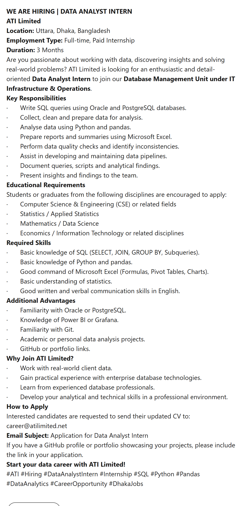
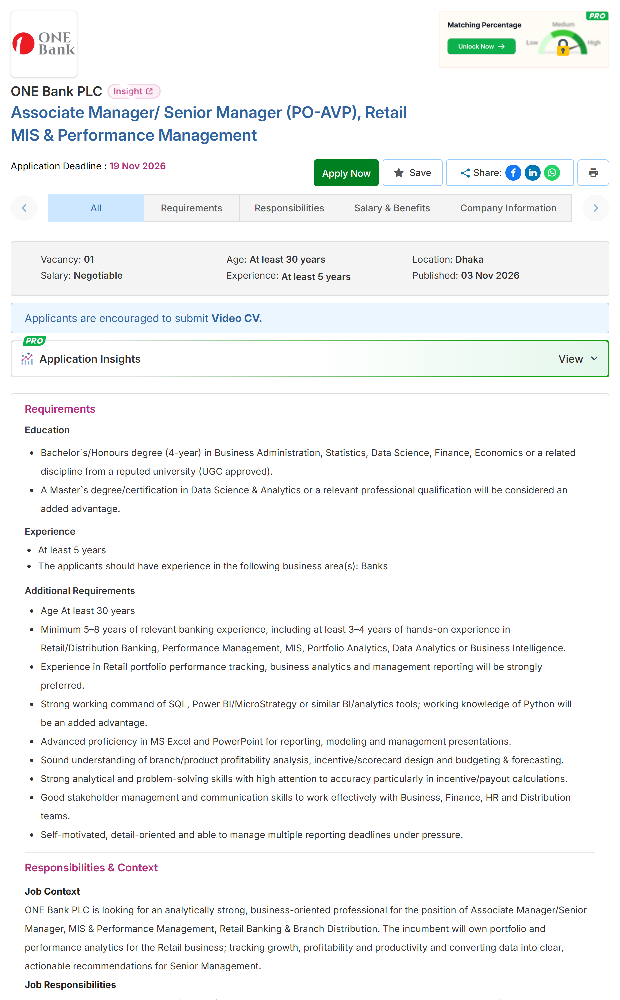
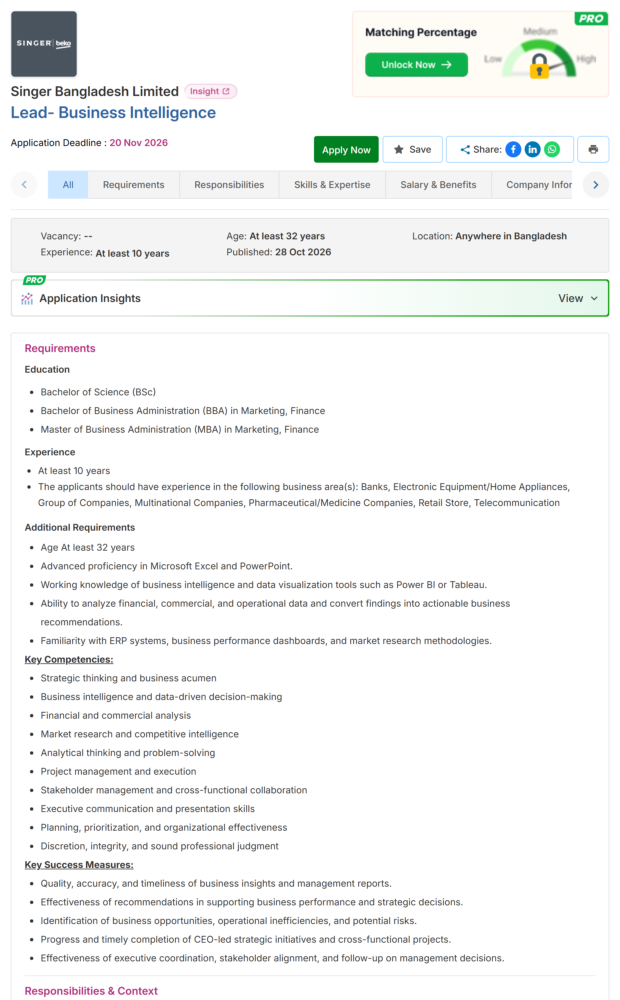
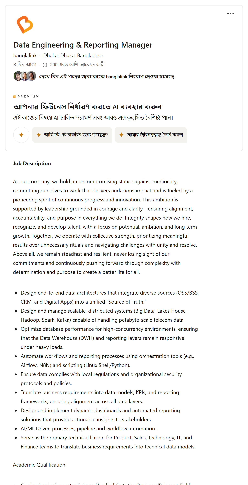
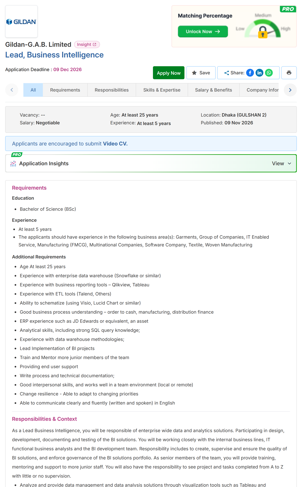
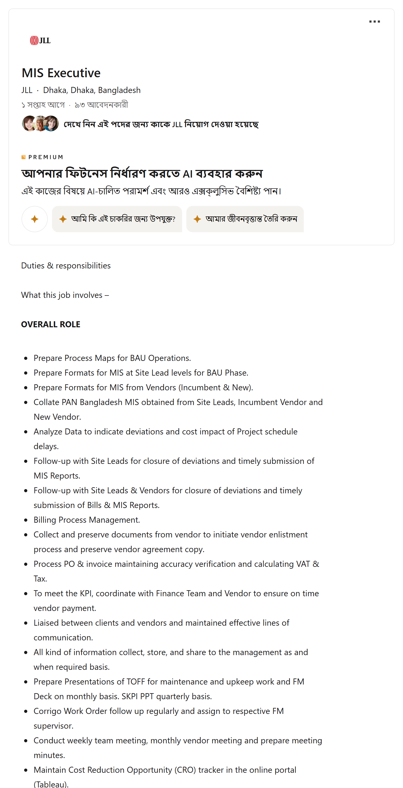
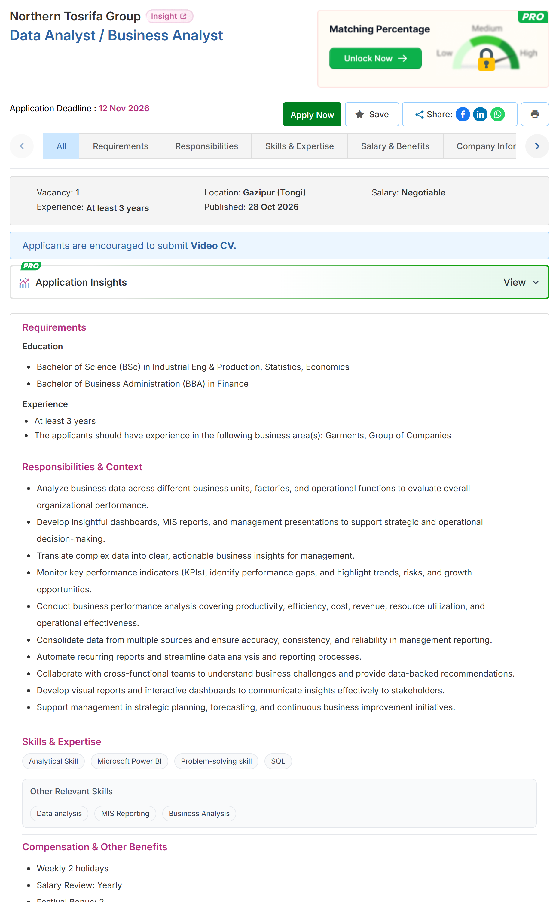

Bangladesh-এর analytics চাকরির বিজ্ঞাপন, bdjobs আর LinkedIn থেকে, একটা একটা করে পড়া
Excel ৬৪%Power BI ৫৫%SQL ৩৬%Python ২৭%




নিজস্ব গণনা: ৩৩টা post, ৩ সেপ্টেম্বর – ১২ নভেম্বর ২০২৬ · research/jobposts
১বিশ্বে কোন skill বাড়ছে
২০২৫–২০৩০: কত শতাংশ কোম্পানি বলছে চাহিদা বাড়বে (net)
AI and big data৮৭
Networks & cybersecurity৭০
Technological literacy৬৮
Creative thinking৬৬
Curiosity & lifelong learning৬১
Analytical thinking৫৫
Programming৩০
WEF, Future of Jobs Report 2025, Figure 3.4, p. 37 · ১,০০০+ employer, ৫৫টা অর্থনীতি
মূল skill এখনো চিন্তা
১০টা কোম্পানির ৭টা: analytical thinking সবচেয়ে দরকারি core skill
৩৯%
কর্মীদের skill বদলে যাবে ২০৩০-এর মধ্যে
৫৯ / ১০০
জনের নতুন training লাগবে
WEF, Future of Jobs Report 2025, p. 6
২০২৭-এর analyst: T-shaped
SQL
Excel
Statistics
Communication
একটা tool-এ গভীর: Power BI বা Python
একটা domain: finance, supply chain…
কোনটা কমছে, কোনটা বাড়ছে
Data Entry Clerk
WEF: দ্রুত কমতে থাকা চাকরির তালিকায়
Data Analysis
Big data specialist: দ্রুত বাড়তে থাকা চাকরির তালিকায়
WEF, Future of Jobs Report 2025, p. 6
২কীভাবে গুনলাম
bdjobs + LinkedIn→
৬৩টা post→
repost, gig, IT/finance বাদ→
৩৩টা analytics post



ছোট নমুনা · শুধু খোলা বিজ্ঞাপন · দিক বোঝায়
নিজস্ব গণনা, ৩ সেপ্টেম্বর – ১২ নভেম্বর ২০২৬ · প্রতি post-এ প্রতিটা skill একবার
Employer যা চায়
৩৩টা post-এর কত শতাংশে এই skill চাওয়া হয়েছে
Reporting & dashboards৯৪%
Communication৭৩%
Excel৬৪%
Power BI৫৫%
Statistics৪৫%
Analytical thinking৪২%
SQL৩৬%
ERP / SAP৩৬%
Python২৭%
AI tools২১%
নিজস্ব গণনা, ৩৩টা post · keyword মিলিয়ে, আনুমানিক · research/jobposts/counts.json
Role অনুযায়ী
MIS১৫
Data Analyst৯
BI / Reporting৪
Data Engineer৪
Data Scientist১
MIS
Report · Excel · ERP
Data Analyst
Communication · SQL · Statistics
Data Engineer
Python · SQL · Pipeline
সবচেয়ে বেশি দরজা খোলা MIS আর Analyst-এ। Data Scientist post প্রায় নেই।
নিজস্ব গণনা, ৩৩টা post · role ধরা হয়েছে job title থেকে
একটা আসল post পড়ি
SQL (Oracle, PostgreSQL) · Python, pandas
Excel formula, pivot, chart · statistics · Power BI বাড়তি
Intern পদেও: GitHub বা portfolio-র link
ATI Limited, "Data Analyst Intern", LinkedIn, ১২ নভেম্বর ২০২৬
কত বছরের অভিজ্ঞতা চায়
০–১ বছর৫
২–৩ বছর১৩
৪–৫ বছর৪
৬+ বছর৪
উল্লেখ নেই৭
নিজস্ব গণনা, ৩৩টা post
৩AI নিয়ে গবেষণা যা বলে
Harvard + BCG, ৭৫৮ জন consultant-এর পরীক্ষা
AI-এর সীমার ভেতরের কাজ
+১২%
বেশি কাজ শেষ · ২৫% দ্রুত
সীমার বাইরের কাজ
−১৯
percentage point কম সঠিক উত্তর (data + interview মিলিয়ে ব্যবসার সমস্যা)
AI দিয়ে draft, যাচাই নিজে।
Dell'Acqua et al., "Navigating the Jagged Technological Frontier", HBS Working Paper 24-013, 2023
Scenario ১: প্রশ্ন থেকে SQL ধরা যাক
Manager
গত মাসে কোন জেলায় অর্ডার সবচেয়ে বেশি কমেছে?
আপনি → AI
Table orders(order_id, order_date, district, amount, status)। গত মাসে আগের মাসের তুলনায় কোন ৫টা জেলায় delivered অর্ডার সবচেয়ে বেশি কমেছে? PostgreSQL।
AI-এর SQL
WITH monthly AS (
SELECT district,
DATE_TRUNC('month', order_date) AS m,
COUNT(*) AS orders
FROM orders
WHERE status = 'delivered'
GROUP BY district, m
)
SELECT cur.district,
cur.orders - prev.orders AS change
FROM monthly cur
JOIN monthly prev
ON prev.district = cur.district
AND prev.m = cur.m - INTERVAL '1 month'
WHERE cur.m = DATE_TRUNC('month', now())
- INTERVAL '1 month'
ORDER BY change LIMIT 5;
cancelled বাদ গেল?আগের মাসে ০ অর্ডারের জেলা JOIN-এ হারাল?district খালি?
Scenario ২: পুরনো query বোঝা ধরা যাক
report_segment_spend.sql
SELECT c.segment, COUNT(DISTINCT o.customer_id) AS buyers, SUM(o.amount) / COUNT(DISTINCT o.customer_id) AS avg_spendFROM orders oLEFT JOIN customers c ON c.id = o.customer_idWHERE o.order_date >= '2026-07-01'GROUP BY c.segment;
AI
LEFT JOIN: customer table-এ নেই এমন অর্ডারও থাকবে, তাদের segment খালি (NULL) আসবে।
AI
প্রতি ক্রেতার গড় খরচ।
AI
জুলাই থেকে আজ পর্যন্ত: শেষ মাসটা অসম্পূর্ণ, মাসে মাসে তুলনা সাবধানে।
Scenario ৩: ফল থেকে insight ধরা যাক
জেলা
সেপ্টেম্বর
অক্টোবর
বদল
Dhaka
১২,৪৮০
১১,০২০
−১১.৭%
Chattogram
৫,২১০
৫,৩৫০
+২.৭%
Sylhet
১,৯৪০
১,৬১০
−১৭.০%
AI-এর সারাংশ
Sylhet-এ অর্ডার ১৭% কমেছে, সম্ভবত বন্যার কারণে। data-তে নেই
আপনার সংশোধন
Sylhet-এ অক্টোবরে অর্ডার ১৭% কমেছে (১,৯৪০ → ১,৬১০)। কারণ এখনো নিশ্চিত না; delivery delay আর আবহাওয়া দুটোই দেখছি। পরের ধাপ: এলাকা ধরে cancellation।
আত্মবিশ্বাসী ভুল উত্তর ধরা যাক
AI: অক্টোবরের revenue
SELECT SUM(o.amount) AS revenueFROM orders oJOIN payments p ON p.order_id = o.order_idWHERE o.order_date >= '2026-10-01';
ঠিক করা
SELECT SUM(amount) AS revenueFROM ordersWHERE order_date >= '2026-10-01' AND order_id IN (SELECT order_id FROM payments);
ফল · কোনো error নেই
৳ ৪.৮৬ কোটি
Finance-এর হিসাবে অক্টোবর
৳ ২.৪১ কোটি
একটা অর্ডার, কয়েক কিস্তি payment → JOIN-এ কয়েকবার গোনা
জানা total-এর সাথে মেলান, কয়েকটা row নিজে দেখুন। Customer data paste করার আগে অফিসের নিয়ম।
৪অভিজ্ঞতা নেই? প্রমাণ দেখান
দাবি
"আমি Power BI পারি"
যে কেউ CV-তে লিখতে পারে
প্রমাণ
dashboard-এর link
আসল data, আসল প্রশ্ন, আসল উত্তর
চারটা starter project
Data Analyst · SQL case study
World Bank WDI: Bangladesh বনাম দক্ষিণ এশিয়া (remittance, internet, তরুণ বেকারত্ব) · CC BY 4.0
BI · Power BI dashboard
Bangladesh Bank: মাসিক wage-earner remittance, মাস আর দেশ ধরে
Data Engineer · daily pipeline
Open-Meteo: ৮ বিভাগীয় শহরের আবহাওয়া → একটা table, নিজে নিজে চলে · CC BY 4.0
Data Scientist · forecast
OpenAQ + আবহাওয়া: ঢাকার PM2.5, পরের দিনের পূর্বাভাস · station-এর license দেখে
প্রতি মাসে কতজন নতুন customer প্রথম অর্ডার দিয়েছেন?
১ মিনিট
উত্তর
WITH first_order AS (
SELECT customer_id,
MIN(order_date) AS first_date
FROM orders
GROUP BY customer_id
)
SELECT DATE_TRUNC('month', first_date) AS month,
COUNT(*) AS new_customers
FROM first_order
GROUP BY month
ORDER BY month;
কমন ভুল: সক্রিয় গোনে, নতুন না
SELECT DATE_TRUNC('month', order_date), COUNT(DISTINCT customer_id)FROM orders GROUP BY 1;